Build reusable structures
Practical Quarto: Patterns, templates, and tooling @ posit::conf(2026)
Templates and template partials
What is a template?
You write a document.
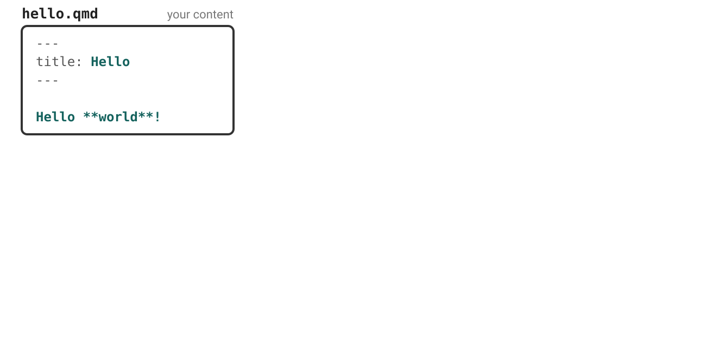
What is a template?
Render it, and you get an HTML document.
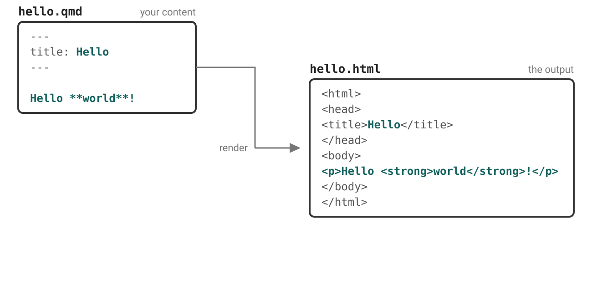
What is a template?
A template: boilerplate, with named holes.
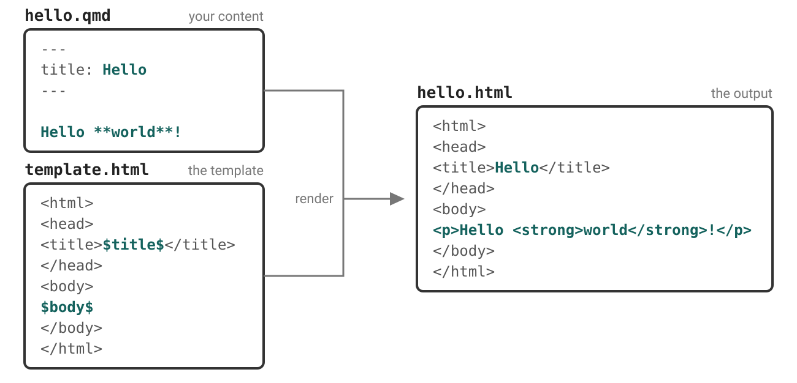
What is a partial?
Part of the template renders the title block.
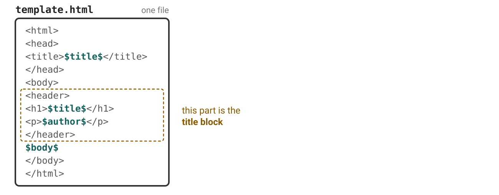
What is a partial?
Pull it out into its own file, now its a partial.
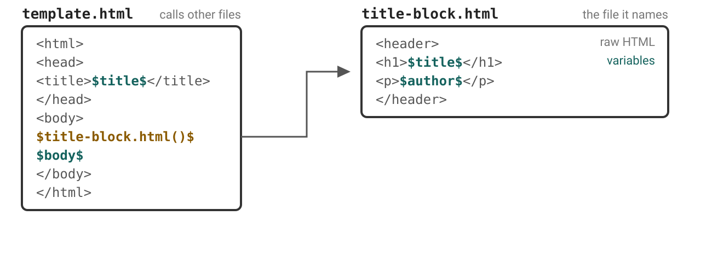
What is a partial?
Quarto does this for many parts of the page.
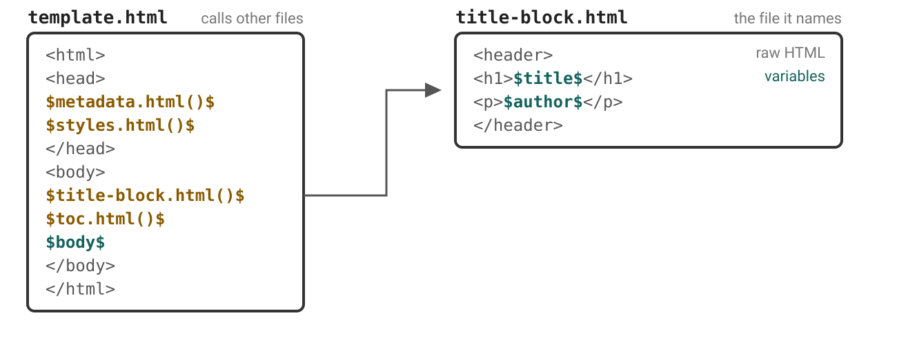
What is a partial?
Replace a partial without touching the rest of the template
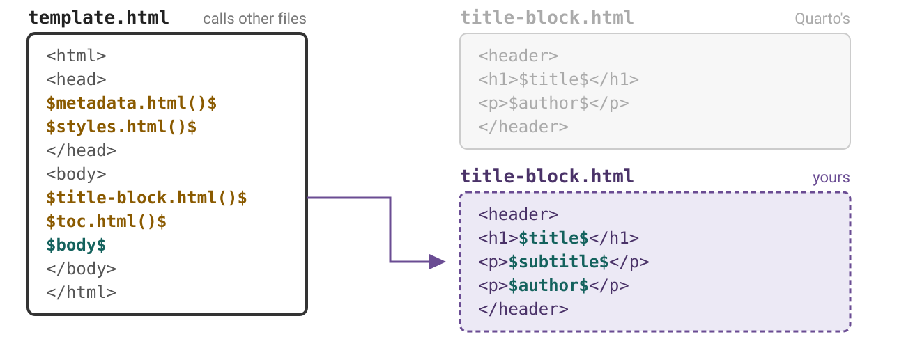
Case study
The Bureau of Regional Statistics publishes a quarterly release as a standalone HTML file.
Every release must carry:
- the agency masthead
- the reference period and the region
- the release status — Provisional, Revised, or Final
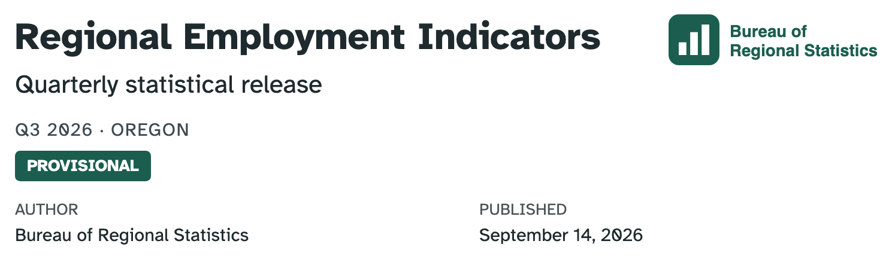
Setup: replace the partial
(Optional) Follow along: 03-partials/00-setup
Pull the brand:
Copy
templates/title-block.htmlinto the folder.Register it:
Our starting point
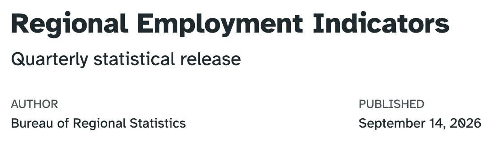
Your turn 1: add the masthead
Add a
mastheadkey to the YAML ofreport.qmd:Add this line to
title-block.html, right after<header ...>:Render.
Challenge: Provide the
alttext via metadata too.
Exercise: 03-partials/01-masthead
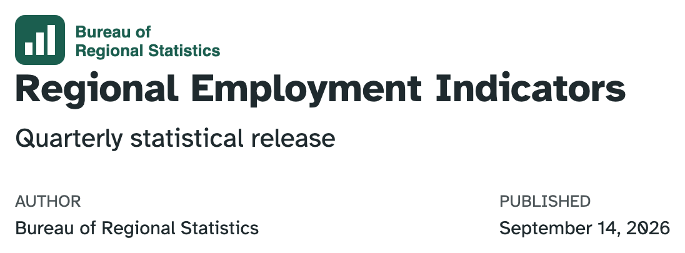
Pandoc template syntax
Write in the format you are targeting: HTML here
Anything inside $...$ or ${...} is Pandoc’s template syntax.
| Write | Get |
|---|---|
$title$ |
the value of the title metadata key |
$brs-release.period$ |
reach into nested metadata with a dot |
$title-block.html()$ |
include a partial — the () mean a file |
Your turn 2: add period and region
Already in your YAML, and shown by nothing:
Copy, then complete, this line to
title-block.html, below the subtitle’s$endif$:Render. What happens when you remove
brs-releasefromreport.qmd?
Exercise: 03-partials/02-period-and-region
Your own metadata, your own namespace
report.qmd
Every top-level name you invent is a bet that Quarto will never claim it.
Nest, and you place that bet once instead of once per field.
Condition markup on presence
Read as if subtitle has a value, then….
Prevents empty <p></p> in the document.
Your turn 3: add status
Add
status: Provisionalunderbrs-release:inreport.qmd.In
title-block.html, below the reference period, show the status in a<span class="report-status">— but only whenbrs-release.statusis set.Render. Then delete the
status:line and render again — the badge should disappear, leaving nothing behind.
Exercise: 03-partials/03-release-status
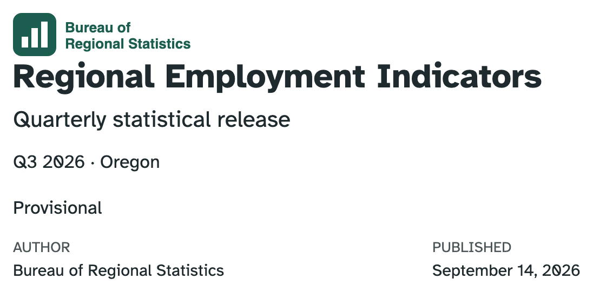
More Pandoc template syntax
| Write | Get |
|---|---|
$if(x)$ … $else$ … $endif$ |
conditionals |
$for(x)$ … $endfor$ |
loop over an array |
$sep$ |
inside a loop: emitted between items, never after the last |
${x/uppercase} |
a pipe — also lowercase, length, reverse, nowrap, … |
$-- |
a comment, to the end of the line |
For HTML: styling lives outside the partials
No color. No size. No position. Just a class.
Three classes:report-masthead,report-period, report-status.
Your turn 4: style what you built
Don’t edit title-block.html.
Ask Posit Assistant to style your title block. Start with the prompt below then describe what you want.
Render. Not what you asked for? Say what is wrong and go again.
Skim
custom.scss. Change one of the brand variables used and render again.
Example prompt:
Exercise: 03-partials/04-style
One answer
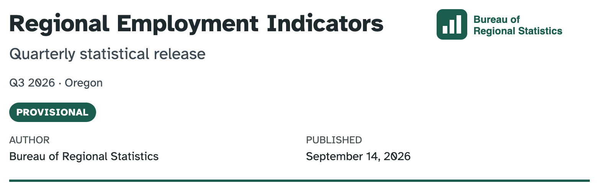
/*-- scss:rules --*/
// Accent rule under the whole masthead block.
#title-block-header {
border-bottom: 3px solid $primary;
padding-bottom: 1rem;
margin-bottom: 1.5rem;
// Clear the floated masthead so the description/metadata sit below.
overflow: hidden;
}
// Logo floats to the right of the title text.
.report-masthead {
float: right;
width: auto;
max-height: 4rem;
margin-left: 1.5rem;
}
.subtitle {
color: $secondary;
}
// Release period reads as secondary metadata.
.report-period {
color: $text-muted;
font-size: 0.9rem;
margin-bottom: 0.75rem;
}
// Status pill. color-contrast() picks a readable foreground from the
// brand background instead of hard-coding black or white.
.report-status {
display: inline-block;
padding: 0.25em 0.75em;
border-radius: 999px;
background-color: $brand-forest;
color: color-contrast($brand-forest);
font-size: 0.75rem;
font-weight: 600;
letter-spacing: 0.05em;
text-transform: uppercase;
}Wrapping up
Replace partials to…
- Expose custom metadata fields in
title-blockforformat: html - Zhuzh up your
title-slide💅 informat: revealjs - Create a custom layout for
format: typst
Partials for various formats
They exist! https://quarto.org/docs/journals/templates.html
document-metadata.latex
passoptions.latex
doc-class.tex
fonts.latex
font-settings.latex
common.latex
pandoc.tex
tables.tex
graphics.tex
citations.tex
babel-lang.tex
tightlist.tex
biblio-config.tex
after-header-includes.latex
hypersetup.latex
before-title.tex
title.tex
before-body.tex
toc.tex
before-bib.tex
biblio.tex
after-body.texnumbering.typ
definitions.typ
typst-template.typ
page.typ
typst-show.typ
notes.typ
biblio.typmetadata.html
title-block.html
title-metadata.html
_title-meta-author.html
toc.htmltoc-slide.html
title-slide.htmlpassoptions.latex
doc-class.tex
fonts.latex
font-settings.latex
common.latex
pandoc.tex
tables.tex
graphics.tex
citations.tex
babel-lang.tex
tightlist.tex
biblio-config.tex
after-header-includes.latex
hypersetup.latex
before-title.tex
title.tex
before-body.tex
toc.tex
before-bib.tex
biblio.tex
after-body.texFull or partial?
Replacing an entire template offers full control of output but comes with the risk of omitting required variables that can break Pandoc/Quarto features.
Safer approaches:
Selectively replace partials that exist within the master LaTeX or HTML template
Replace the entire LaTeX or HTML template, but then include partials provided with Quarto to ensure that your template takes advantage of all Pandoc and Quarto features
Sharing: a custom format extension
Everything you built, in one folder someone else can install:
Example: brs-format
Questions?
Resources
The full template.html
![A schematic of template.html as an ordered stack inside literal html, head, and body tags, each section drawn as a box. Inside the head: metadata.html (meta tags), styles.html (CSS), and a dashed header-includes slot. Inside the body: a dashed include-before slot; title-block.html (only if title, subtitle, author, date, or similar metadata is set), drawn as a container nesting title-metadata.html, which nests _title-meta-author.html; toc.html (table of contents, only if toc is set); the body; and a dashed include-after slot. Dotted marks between the boxes indicate the template's literal HTML boilerplate.](../images/html-template-partials.svg)
There is more than one title-block.html
Quarto picks one for you based on your YAML, and the docs link to the wrong one for the default:
| Your YAML | Partial that renders |
|---|---|
| (nothing — Bootstrap default) | templates/title-block.html ← you used this one |
title-block-banner: true |
templates/banner/title-block.html |
title-block-style: manuscript |
templates/manuscript/title-block.html |
title-block-style: none |
pandoc/title-block.html — Pandoc’s plain block |
Template: format: revealjs
![A schematic of template.html for revealjs as an ordered stack inside literal html, head, and body tags, each section drawn as a box. Inside the head: styles.html (shared with the html format) and a dashed header-includes slot. Inside the body: a dashed include-before slot, then a box marking the div with class slides, holding title-slide.html, toc-slide.html (only if toc is set), and the body (one section element per slide), then the template's literal reveal.js setup scripts shown as a dotted mark, and last a dashed include-after slot. Dotted marks between the boxes indicate the template's literal HTML boilerplate.](../images/revealjs-template-partials.svg)
Template: format: pdf
![A schematic of template.tex as an ordered stack of partial files. The preamble partials come first: document-metadata.latex, passoptions.latex, doc-class.tex, fonts.latex, and font-settings.latex, then common.latex drawn as a container nesting pandoc.tex, which holds six leaf partials (babel-lang, biblio-config, citations, graphics, tables, tightlist) and the dashed header-includes slot, then after-header-includes.latex, hypersetup.latex, before-title.tex (empty hook), and title.tex. The document section, delimited by the literal begin-document and end-document lines, holds before-body.tex, a dashed include-before slot, toc.tex, the body, before-bib.tex (empty hook), biblio.tex, a dashed include-after slot, and after-body.tex (empty hook).](../images/pdf-template-partials.svg)
Localized strings in templates
Hard-coding “Table of contents” in a partial breaks the moment someone sets lang:.
Since Quarto 1.10, the strings Quarto already translates are template variables:
lang: en |
lang: fr |
|---|---|
| Table of contents | Table des matières |
| Abstract | Résumé |